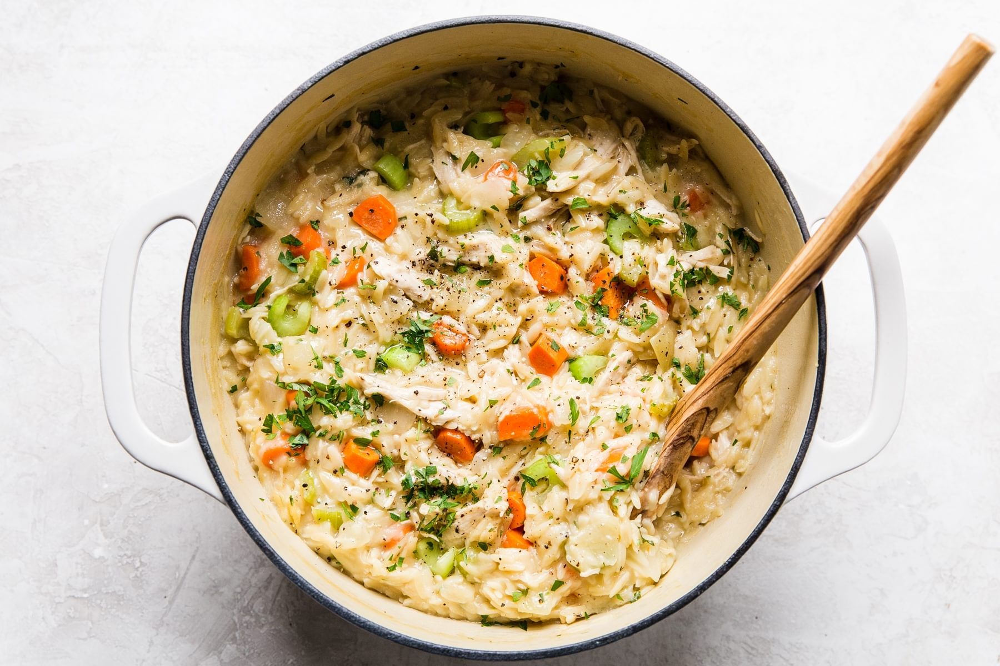

Creamy Chicken Orzo

What the fuck is orzo?
Ingredients
- 1 tbsp extra-virgin olive oil
- 1 onion (chopped)
- 2 celery (chopped)
- 2 carrots (chopped)
- 4 garlic cloves (minced)
- 8 cups chicken stock
- 3 cups shredded boiled chicken
- 1 lb orzo
- 1 tbsp minced parsley
- 1 tsp sea salt
- 1 tsp garlic powder
- 1/4 tsp black pepper
Recipe Instructions
- Heat olive oil in large pot over medium
- Add onion, celery, and carrots and cook for ~7 minutes until onion is translucent
- Add garlic and cook until fragrant for ~1-2 minutes
- Add chicken stock, increase heat to high, and bring to a boil
- Once boiling, stir in chicken and orzo while reducing heat to medium and adding parsley, salt, garlic powder, and pepper
- Simmer for ~20 minutes until veggies are tender, orzo is creamy, and most of the liquid has been absorbed
Return to main page